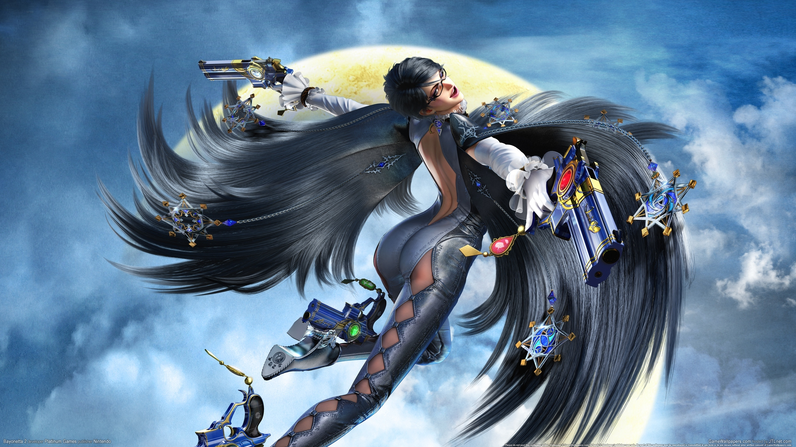

Buen juego, tiene muy buena musica y las mecanicas y ambientacion son muy originales, el mensaje y formato del juego es unico y eso lo hace un juego destacable, si te gustaron los paper mario este juego sin duda lo disfrutaras, tiene una trama carismatica que no te aburrira, el apartado grafico y visual es unico e original este llama la atencion por el mimo que tiene ante diseño de los escenarios y las pequeñas referencias a la industria del videjuego, ademas el juego es para todo publico me refiero a que no solo es para la gente quien le encanta los paper mario o lleva años en esta industria si no para los más novatos en el escenario gaming.
yo diria que es uno de esos titulos adecuados para entrar en el mundo de los videojuegos o en los rpg ya que su fuerte no esta en la dificultad del gameplay a pesar de que tenga elementos rpg el titulo lo enfoca para un publico más general o novatos en el rpg, esto no quiere decir que el videojuego sea aburrido para los más veteranos ya que el videojuego no hace enfasis en su dificultad, si no que se enfoca en sus divertidos y carismaticos personajes, diversas mecanicas, puzzles e historia, rpg time legend of wright no busca un reto en el jugador si que busca sacarte unas carcajadas y hacerte pasar un buen rato este sin duda un juego que divierte a todo tipo de jugador.
cons: puede que al principio te parezca extraño o incomodo el apartado visual esto es normal debido a la rareza de este para no decir que es de los unicos que hace esto en su genero, esto sera solo al principio ya que en poco tiempo de juego terminaras por acostumbrandote y llegando a gustar este apartado visual."recomendado para jugar despues de un largo dia o cuando necesites sacarte unas risitas"
Remember, to do this you have to put the images before the content you want to put between, if you have 2 floating elements between one block element in the code, its the same as you did clear:both; between them, so they will never appear in the same horizontal level.
yo diria que es uno de esos titulos adecuados para entrar en el mundo de los videojuegos o en los rpg ya que su fuerte no esta en la dificultad del gameplay a pesar de que tenga elementos rpg el titulo lo enfoca para un publico más general o novatos en el rpg, esto no quiere decir que el videojuego sea aburrido para los más veteranos ya que el videojuego no hace enfasis en su dificultad, si no que se enfoca en sus divertidos y carismaticos personajes, diversas mecanicas, puzzles e historia, rpg time legend of wright no busca un reto en el jugador si que busca sacarte unas carcajadas y hacerte pasar un buen rato este sin duda un juego que divierte a todo tipo de jugador.
you can center the images, adding a display:block; property to the image, this makes the image flow as a block-level element making the content / text above starts in a new line. to center the content you should give a margin to the image of values 0 auto 0 auto or you can align the text to the center.
este texto ira centrado y ademas estara por debajo de la imagen de ferran. este texto ira centrado y ademas estara por debajo de la imagen de ferran. este texto ira centrado y ademas estara por debajo de la imagen de ferran. este texto ira centrado y ademas estara por debajo de la imagen de ferran. este texto ira centrado y ademas estara por debajo de la imagen de ferran. este texto ira centrado y ademas estara por debajo de la imagen de ferran.